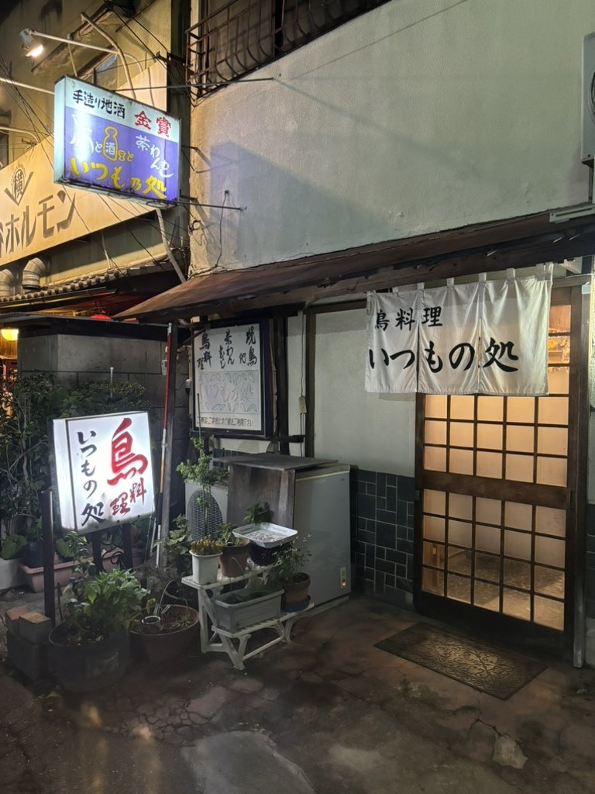
鳥料理
今夜も、いつもの処で。
夫婦で営む、鳥料理の店です。どうぞお気軽にお立ち寄りください。
17:30〜23:00日曜・月曜 休み
JR小山駅 西口から徒歩2分
鳥と酒と茶わんむし
開店のときから変わらずお出ししている、当店の看板です。ゆずを香らせたお出汁で、レンゲですくってお召し上がりください。
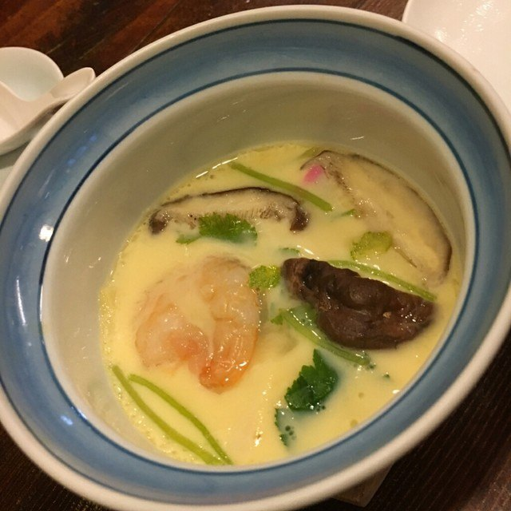
ねぎま、皮、レバー、ぼんじり、かしら、なん骨。一本ずつ焼いてお出しします。お好きな串を、お好きな本数でどうぞ。
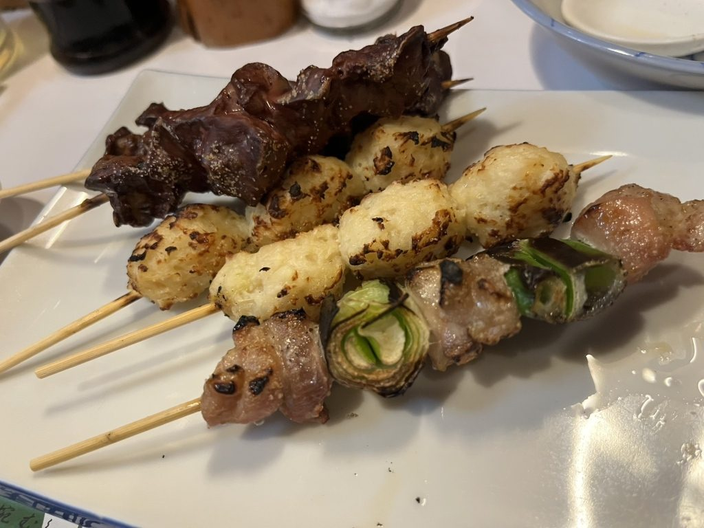
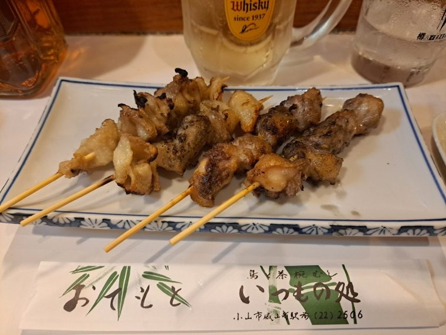
鳥刺しは、黄身和え・大葉はさみ・納豆巻きの三種を、ひと皿に盛ってお出しします。鳥わさ、唐揚げ、コロッケ、そして締めの鳥雑炊まで、鳥はひと通りご用意しております。
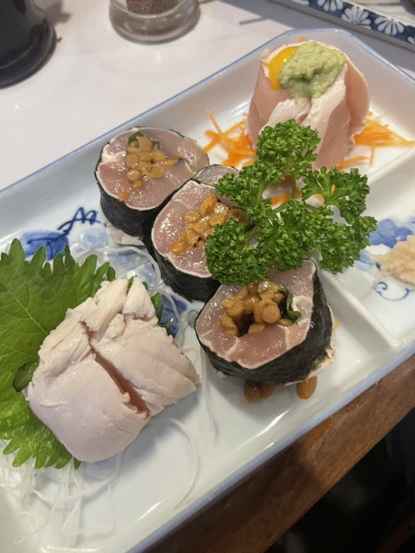
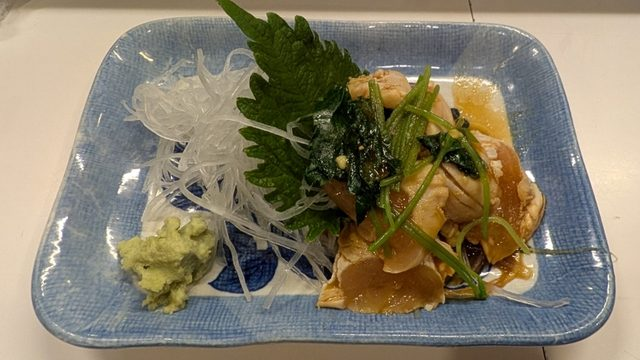
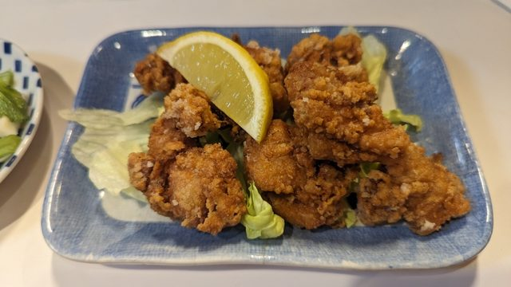
刺身や焼き魚など、その日の品は黒板でご案内します。お通しも、日ごとに変えてお出ししております。まずはこれで一杯どうぞ。
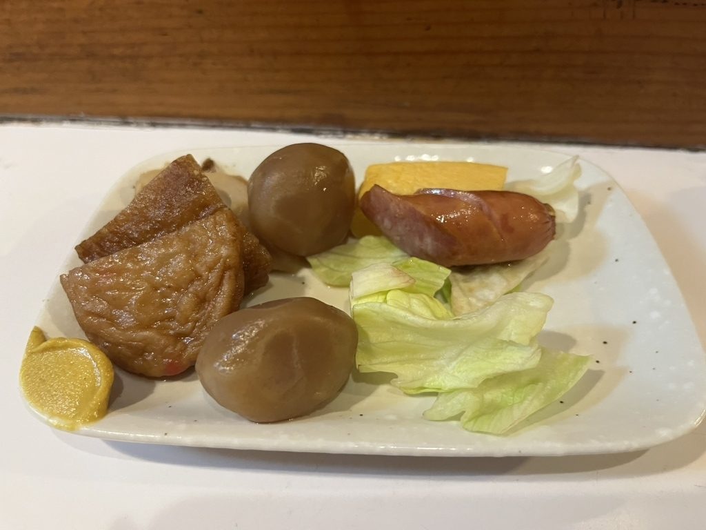
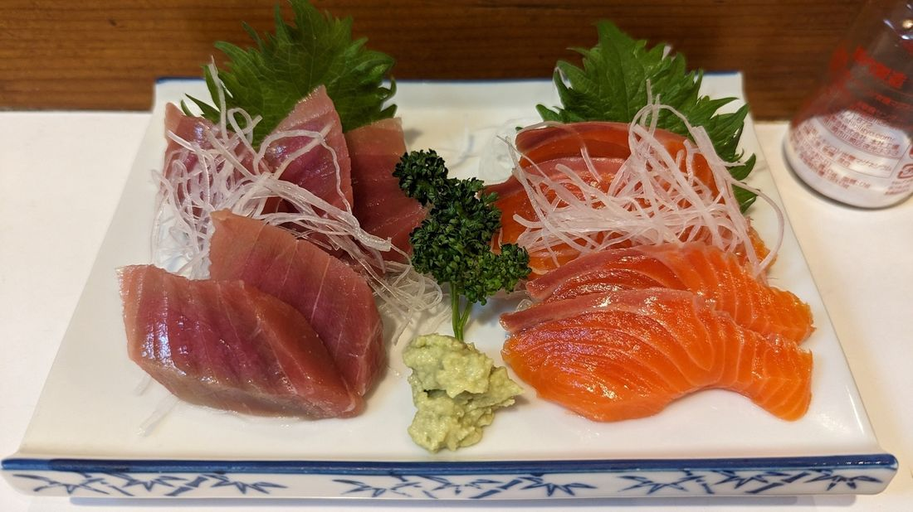
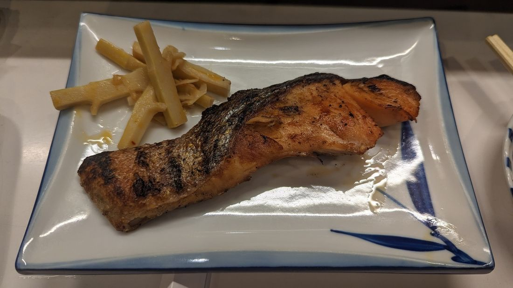
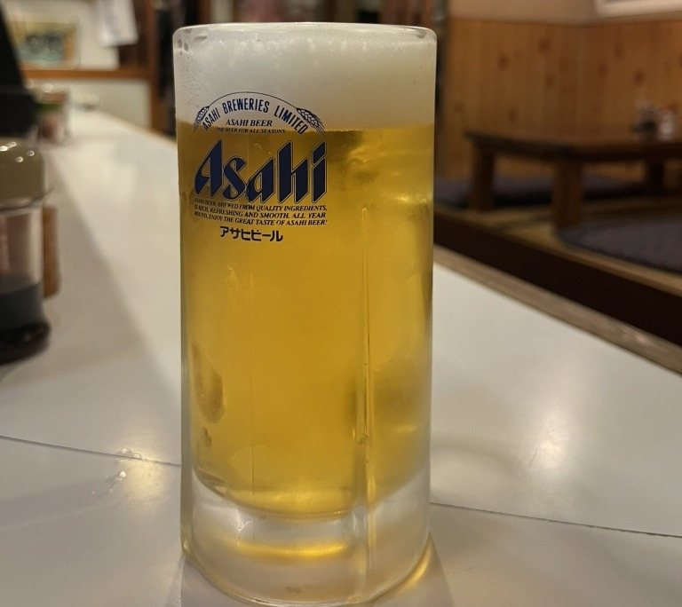
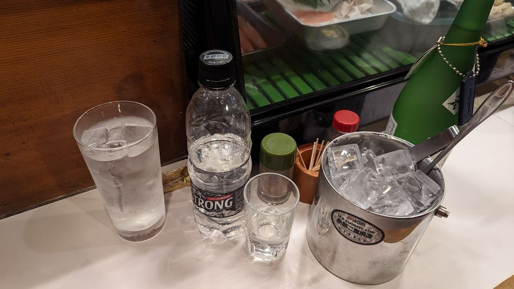
生ビール、ハイボール、レモンサワー。焼酎はボトルでお預かりします。地酒と、梅酒・ゆず酒もございます。
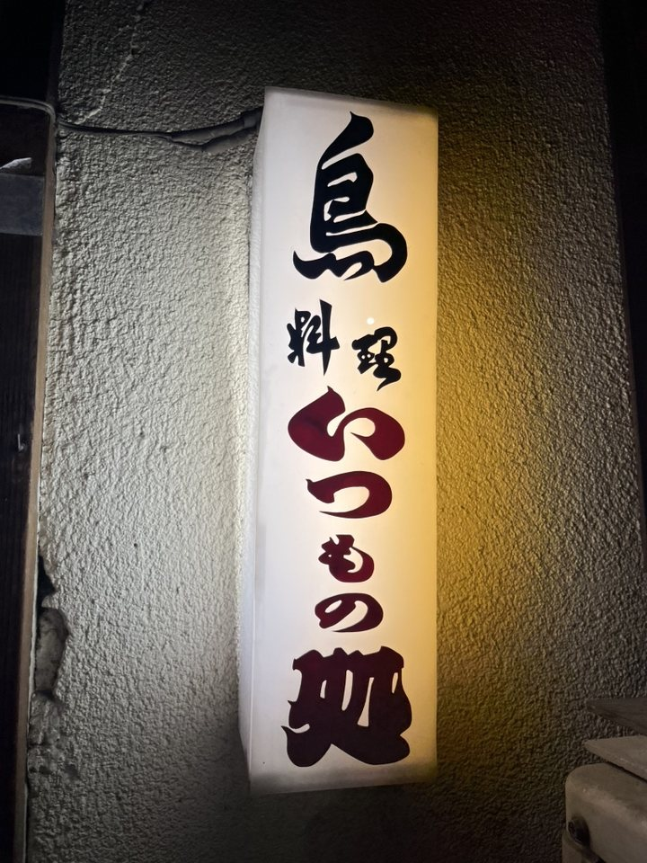
カウンターと、小上がりのお席がございます。お一人ならカウンターへ、お仲間とご一緒なら小上がりへどうぞ。
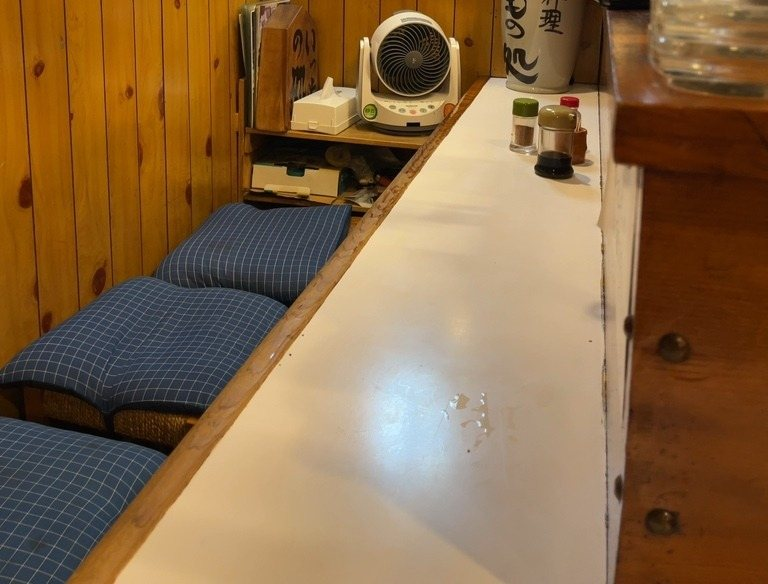
「いつものお通しも手が込んでて美味い。刺身も鳥わさも間違いない味だ。焼き鳥も何本でも食べられる味付け。」
食べログ（2025年8月）
「串物が業務用ではなくお店で打ったものみたいで美味しい」
食べログ（2026年2月）
「初めて行っても常連さんのように接してくれる お母さん（女将さん）がいる昭和感たっぷりなお店」
食べログ（2024年10月）
ご来店の前に、ご確認をお願いいたします。
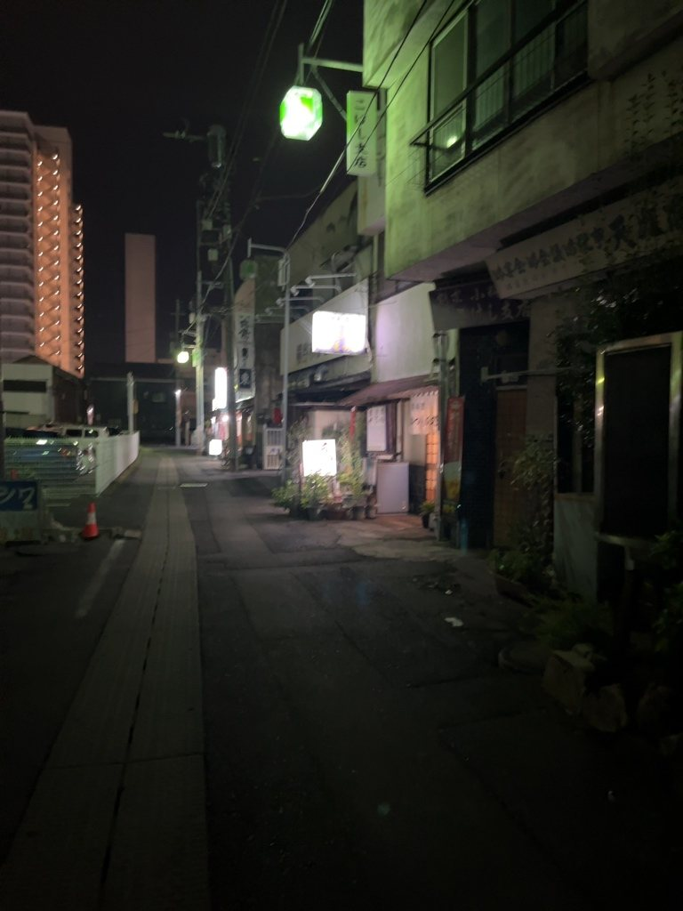
JR小山駅 西口から徒歩2分、城山町の路地の中です。白いのれんと、「鳥料理」の置き看板が目印です。
のれんを掛けて、お待ちしております。